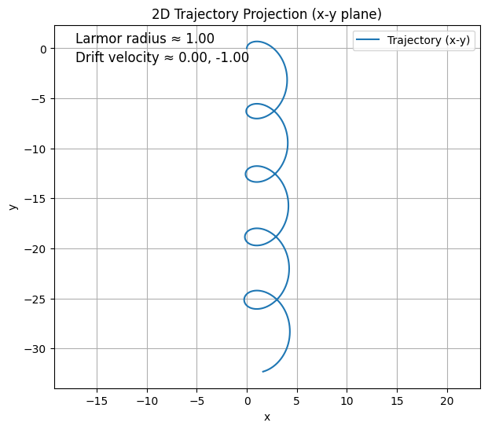
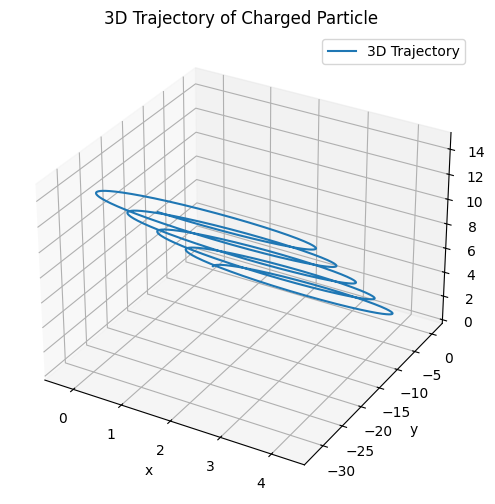
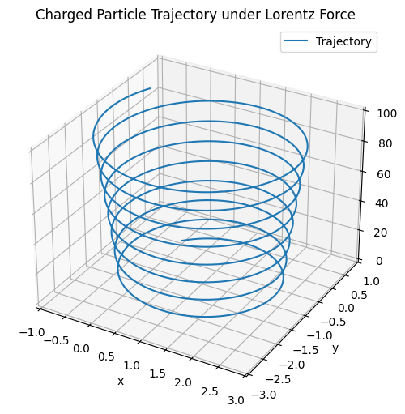

1. Exploration of Applications of the Lorentz Force
Introduction
The Lorentz force is fundamental to the motion of charged particles in both electric and magnetic fields. It is given by:
Where: - \(F\) is the total force on the particle, - \(q\) is the particle’s electric charge, - \(E\) is the electric field vector, - \(B\) is the magnetic field vector, - \(v\) is the velocity of the particle.
This force determines the trajectory and acceleration of particles in various physical systems, especially in modern technology and fundamental physics.
Key Systems Where the Lorentz Force Is Crucial
1. Particle Accelerators
Application: Accelerate charged particles to high speeds using electric fields and guide them with magnetic fields.
Lorentz Role: - Electric fields provide acceleration (linear increase in speed). - Magnetic fields bend the particle’s path, enabling circular or spiral motion.
Example: In a cyclotron, particles spiral outward due to the combined effect of magnetic deflection and increasing kinetic energy.
2. Mass Spectrometers
Application: Separate ions based on their mass-to-charge ratio.
Lorentz Role: - A known \(B\)-field bends particle paths. - The radius of curvature depends on mass and velocity:
- By measuring the deflection, the mass of particles can be inferred.
3. Plasma Confinement in Fusion Reactors
Application: Contain hot ionized gas (plasma) for controlled fusion.
Lorentz Role: - Charged particles spiral along magnetic field lines. - Magnetic traps (e.g., tokamaks, stellarators) use complex \(B\)-fields to keep plasma from touching reactor walls.
4. Cathode Ray Tubes & CRT Monitors
Application: Use deflected electron beams to generate images on screens.
Lorentz Role: - Magnetic or electric fields steer electron paths to target pixels on a phosphorescent screen.
5. Astrophysical Environments
Application: Motion of particles in cosmic magnetic fields.
Lorentz Role: - Charged particles (cosmic rays, solar wind) spiral along planetary magnetic fields. - Auroras are caused by electrons being steered by Earth’s \(B\)-field into the upper atmosphere.
Role of \(E\) and \(B\) Fields
Electric Fields (\(E\))
- Affect particle motion along the field lines.
- Provide linear acceleration.
- Control energy gain in accelerators.
- Used in devices like capacitors, ion thrusters, and electric field traps.
Magnetic Fields (\(B\))
- Affect motion perpendicular to both velocity and field via:
- Cause circular or helical motion.
- Useful for guiding and trapping particles without energy change.
- Essential in plasma containment, mass analysis, and beam focusing.
2. Simulating Particle Motion Under Lorentz Force
Goal
Simulate and visualize how a charged particle moves when subject to different combinations of electric and magnetic fields, based on the Lorentz force law:
This will demonstrate: - Circular motion (uniform magnetic field). - Helical motion (magnetic field + initial velocity component along field). - Drift motion (crossed \(E\) and \(B\) fields).
Simulation Overview
We solve the particle’s equations of motion numerically using the Runge-Kutta method or Euler’s method.
We simulate: - Position: \(r(t)\), - Velocity: \(v(t)\).
Governing Equations
The equations of motion are:
3. – Parameter Exploration of Lorentz Force Effects
Objective
Explore how changing physical parameters affects a particle’s trajectory under the Lorentz force:
This helps understand: - How field strengths bend or accelerate the motion. - How initial velocity determines orbit radius or drift. - How charge and mass influence acceleration and curvature.
Theoretical Considerations
- Stronger \(B\): Leads to tighter circular or helical motion.
- Stronger \(E\): Causes faster drift or linear acceleration.
- Larger charge \(q\): Results in more force, leading to tighter curvature or faster acceleration.
- Larger mass \(m\): Slower response to fields due to greater inertia.
4. Visualization of Particle Motion and Key Physical Effects
Objective
Use 2D and 3D plots to visualize the motion of a charged particle under the Lorentz force. Highlight important physical features such as: - Larmor radius (the radius of circular motion in a magnetic field). - Drift velocity (net particle motion in crossed \(E\) and \(B\) fields).
Key Concepts
Larmor Radius (\(r_L\))
Occurs in uniform magnetic fields when \(E = 0\).
Given by:
where \(v_\perp\) is the component of velocity perpendicular to the magnetic field.
E × B Drift
When \(E \perp B\), the particle undergoes a net drift.
Drift velocity:
Python Code: 2D and 3D Visualization with Highlights
import numpy as np
import matplotlib.pyplot as plt
# Parameters
q = 1.0 # Charge
m = 1.0 # Mass
B = np.array([0.0, 0.0, 1.0]) # Magnetic field
E = np.array([1.0, 0.0, 0.0]) # Electric field (change for different cases)
v0 = np.array([0.0, 1.0, 0.5]) # Initial velocity
r0 = np.array([0.0, 0.0, 0.0]) # Initial position
dt = 0.01
steps = 3000
# Initialize
r = r0.copy()
v = v0.copy()
positions = [r.copy()]
for _ in range(steps):
F = q * (E + np.cross(v, B))
a = F / m
v += a * dt
r += v * dt
positions.append(r.copy())
positions = np.array(positions)
# Calculate theoretical Larmor radius (if E = 0)
v_perp = np.linalg.norm(v0[:2]) # perpendicular to Bz
B_mag = np.linalg.norm(B)
r_L = m * v_perp / (q * B_mag) if B_mag != 0 else np.nan
# Calculate drift velocity
if B_mag != 0 and np.linalg.norm(E) > 0:
v_drift = np.cross(E, B) / B_mag**2
else:
v_drift = np.array([0.0, 0.0, 0.0])
# Plot 2D projection (x vs y)
plt.figure(figsize=(7, 6))
plt.plot(positions[:, 0], positions[:, 1], label='Trajectory (x-y)')
plt.title('2D Trajectory Projection (x-y plane)')
plt.xlabel('x')
plt.ylabel('y')
plt.axis('equal')
plt.grid(True)
plt.legend()
# Annotate Larmor radius
if not np.isnan(r_L):
plt.text(0.05, 0.95, f'Larmor radius ≈ {r_L:.2f}', transform=plt.gca().transAxes, fontsize=12)
# Annotate drift velocity
if np.linalg.norm(v_drift) > 0:
plt.text(0.05, 0.90, f'Drift velocity ≈ {v_drift[0]:.2f}, {v_drift[1]:.2f}', transform=plt.gca().transAxes, fontsize=12)
plt.show()
# 3D plot
from mpl_toolkits.mplot3d import Axes3D
fig = plt.figure(figsize=(8, 6))
ax = fig.add_subplot(111, projection='3d')
ax.plot3D(positions[:, 0], positions[:, 1], positions[:, 2], label='3D Trajectory')
ax.set_title("3D Trajectory of Charged Particle")
ax.set_xlabel("x")
ax.set_ylabel("y")
ax.set_zlabel("z")
ax.legend()
plt.show()


Explanation:
This Python script simulates and visualizes the motion of a charged particle under the Lorentz force in both 2D and 3D, highlighting key physical effects such as the Larmor radius and E × B drift velocity.
Parameters
- \(q = 1.0\): Charge of the particle (arbitrary units).
- \(m = 1.0\): Mass of the particle (arbitrary units).
- \(B = [0, 0, 1.0]\): Magnetic field vector (along z-axis, strength 1.0).
- \(E = [1.0, 0, 0]\): Electric field vector (along x-axis, strength 1.0).
- \(v_0 = [0.0, 1.0, 0.5]\): Initial velocity (m/s, components in y and z).
- \(r_0 = [0.0, 0.0, 0.0]\): Initial position (m, at origin).
- \(dt = 0.01\): Time step for simulation.
- \(\text{steps} = 3000\): Number of time steps.
Plot
- 2D Plot:
- Displays the particle’s trajectory projected onto the x-y plane.
- Shows circular or curved motion due to the magnetic field.
- Annotates the Larmor radius (\(r_L\)) if \(B \neq 0\).
- Annotates the drift velocity components if \(E \neq 0\).
- Uses equal axes to preserve the shape of the trajectory.
-
Includes a grid and legend for clarity.
-
3D Plot:
- Shows the full 3D trajectory (\(x\), \(y\), \(z\)).
- Highlights helical motion (due to \(v_{0z} \neq 0\)) combined with drift.
- Labels axes in meters and includes a legend.
Python Simulation (3D Motion)
import numpy as np
import matplotlib.pyplot as plt
from mpl_toolkits.mplot3d import Axes3D
# Constants
q = 1.0 # Charge (C)
m = 1.0 # Mass (kg)
dt = 0.01 # Time step
steps = 5000 # Number of steps
# Initial Conditions
r = np.array([0.0, 0.0, 0.0]) # Initial position
v = np.array([1.0, 1.0, 2.0]) # Initial velocity
# Field Configuration
E = np.array([0.0, 0.0, 0.0]) # Electric field
B = np.array([0.0, 0.0, 1.0]) # Magnetic field
# You can try:
# E = [1, 0, 0], B = [0, 0, 1] → Crossed fields
# E = [0, 0, 0], B = [0, 0, 1] → Pure magnetic
# E = [0, 0, 1], B = [0, 0, 1] → Combined fields
# Storage
positions = [r.copy()]
# Euler Integration
for _ in range(steps):
F = q * (E + np.cross(v, B))
a = F / m
v = v + a * dt
r = r + v * dt
positions.append(r.copy())
positions = np.array(positions)
# Plotting
fig = plt.figure(figsize=(10, 6))
ax = fig.add_subplot(111, projection='3d')
ax.plot3D(positions[:, 0], positions[:, 1], positions[:, 2], label='Trajectory')
ax.set_xlabel('x')
ax.set_ylabel('y')
ax.set_zlabel('z')
ax.set_title('Charged Particle Trajectory under Lorentz Force')
ax.legend()
plt.show()

Explanation:
This Python script simulates and visualizes the 3D motion of a charged particle under the Lorentz force, demonstrating its trajectory influenced by electric and magnetic fields.
Parameters
- \(q = 1.0\): Charge of the particle (arbitrary units).
- \(m = 1.0\): Mass of the particle (arbitrary units).
- \(dt = 0.01\): Time step for simulation.
- \(\text{steps} = 5000\): Number of time steps.
- \(r_0 = [0.0, 0.0, 0.0]\): Initial position (m, at origin).
- \(v_0 = [1.0, 1.0, 2.0]\): Initial velocity (m/s, components in x, y, z).
- \(E = [0.0, 0.0, 0.0]\): Electric field vector (no electric field in this setup).
- \(B = [0.0, 0.0, 1.0]\): Magnetic field vector (along z-axis, strength 1.0).
Simulation Method
The script uses Euler’s method to numerically solve the equations of motion under the Lorentz force:
- Force Calculation: Computes \(F = q (E + v \times B)\) at each step. Here, \(E = 0\), so \(F = q (v \times B)\).
- Acceleration: \(a = F / m\).
- Update: Updates velocity (\(v \gets v + a \cdot dt\)) and position (\(r \gets r + v \cdot dt\)).
- Tracks positions over 5000 steps to form the trajectory.
Physical Calculations
- Larmor Radius (\(r_L\)):
Since \(E = 0\), the particle undergoes circular or helical motion in a uniform magnetic field. The radius of the circular component (in the x-y plane, perpendicular to \(B\)) is:
$$ r_L = \frac{m v_\perp}{q B} $$
where \(v_\perp = \sqrt{v_{0x}^2 + v_{0y}^2} = \sqrt{1.0^2 + 1.0^2} = \sqrt{2} \approx 1.414\), \(q = 1.0\), \(m = 1.0\), and \(B = 1.0\). Thus, \(r_L \approx 1.414\).
-
Helical Motion:
The initial velocity component along \(B\) (z-axis), \(v_{0z} = 2.0\), causes linear motion along z, combining with the x-y circular motion to form a helix. -
E × B Drift:
Since \(E = 0\), there is no drift velocity (\(v_{\text{drift}} = \frac{E \times B}{B^2} = 0\)).
Plot
- 3D Plot:
- Displays the full 3D trajectory (\(x\), \(y\), \(z\)) of the particle.
- Shows a helical path due to the magnetic field (\(B\) along z) and non-zero \(v_{0z}\).
- The x-y plane exhibits circular motion with radius approximately equal to the Larmor radius.
- Labels axes in meters (x, y, z) and includes a title and legend.
- The plot spans a sufficient duration (5000 steps) to capture multiple helical loops.